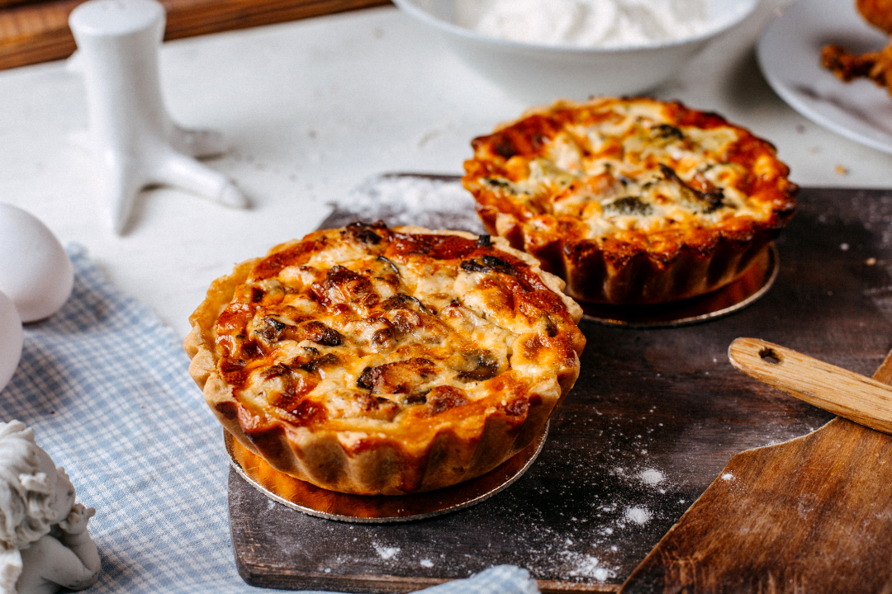

Sheperd's Pie Recipe

Shepherd's Pie is a traditional British dish made with ground meat, vegetables, and topped with mashed potatoes.
Ingredients:
- 1 lb ground beef or lamb
- 1 onion, chopped
- 2 carrots, diced
- 1 cup frozen peas
- 2 tablespoons tomato paste
- 1 cup beef broth
- 4 cups mashed potatoes
- Salt and pepper to taste
Instructions:
- Preheat the oven to 400°F (200°C).
- In a large skillet, cook the ground meat until browned. Drain excess fat.
- Add the onion and carrots to the skillet and cook until softened.
- Stir in the tomato paste and beef broth. Simmer for 10 minutes.
- Add the frozen peas and cook for another 5 minutes.
- Transfer the meat mixture to a baking dish and spread the mashed potatoes on top.
- Bake for 20-25 minutes or until the top is golden brown.
Back to Home